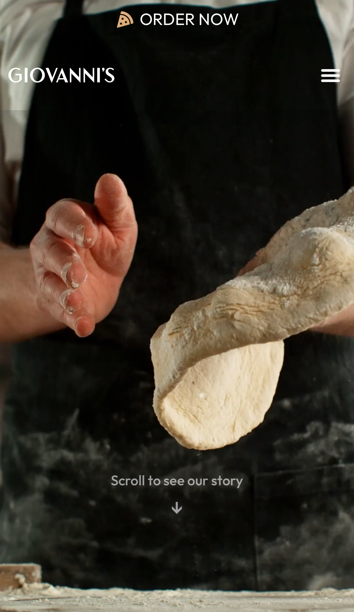
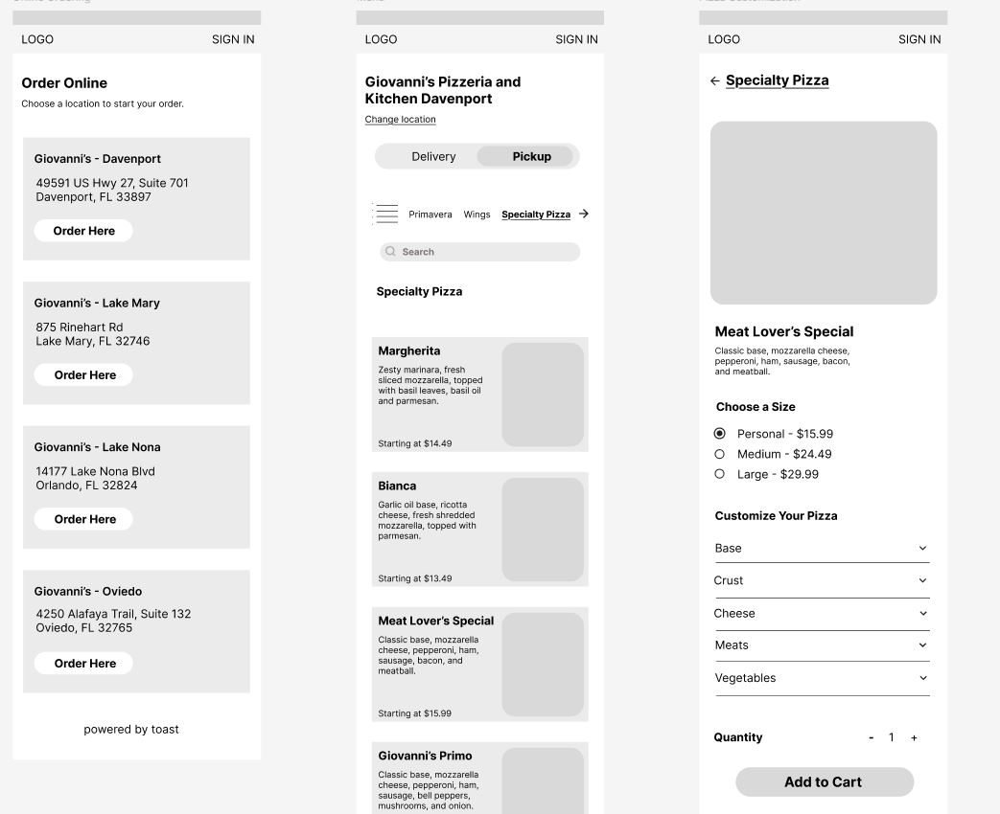
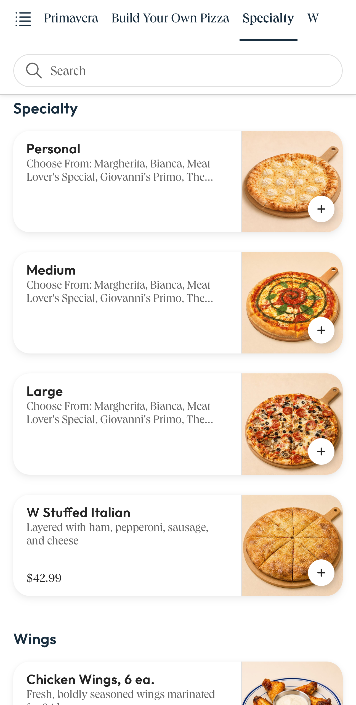
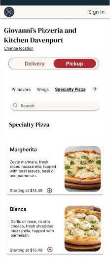
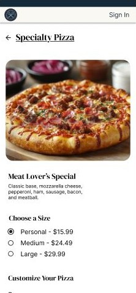
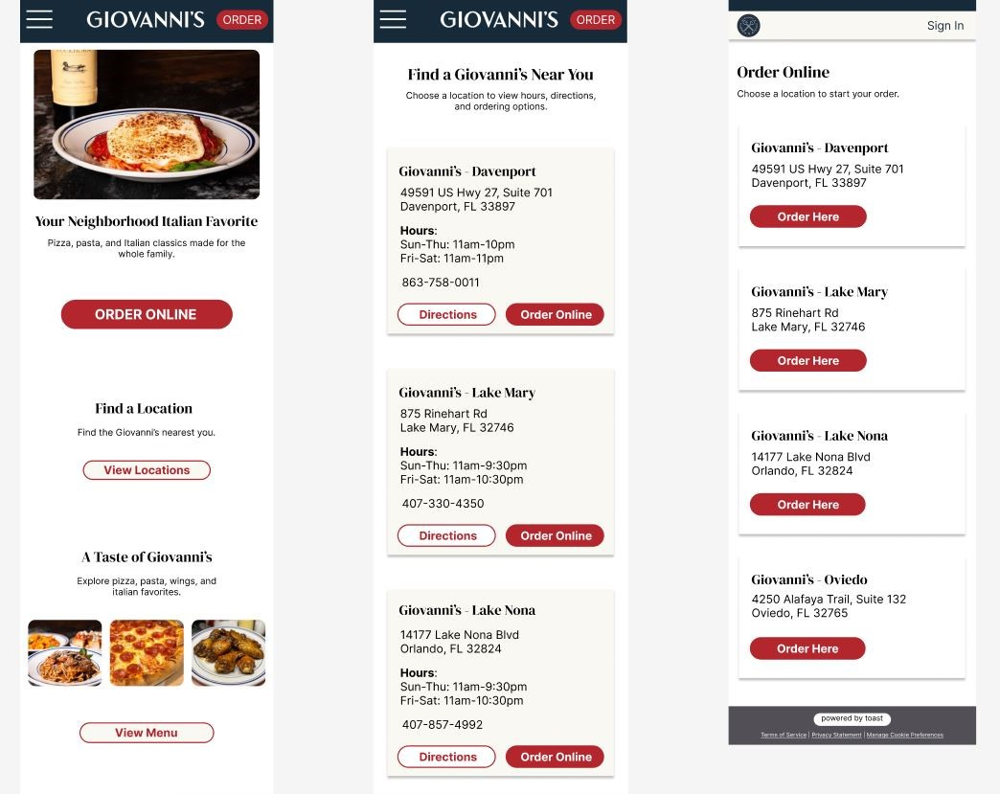
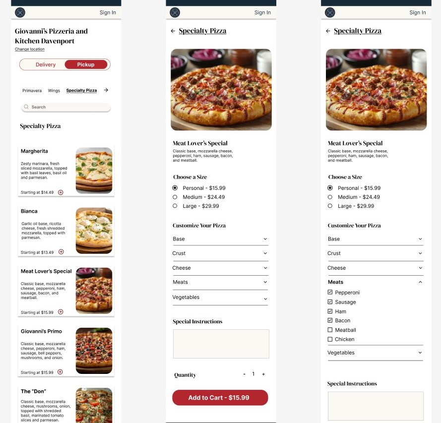

A mobile-first UX/UI redesign focused on simplifying navigation, improving menu discoverability, and creating a more intuitive online ordering experience.

Project Type: UX/UI Case Study (Concept Redesign)
Role: UX Researcher & UI Designer
Timeline: 4 Weeks
Tools: Figma, Adobe Illustrator
Giovanni's Pizzeria and Kitchen is an Italian restaurant with multiple locations in Central Florida. While the restaurant has established a strong local reputation, I identified opportunities to improve its digital ordering experience by reducing friction, improving menu discoverability, and simplifying navigation.
Unlike a typical concept project, this redesign was informed by both a usability evaluation of the existing website and firsthand observations from working at the restaurant. Daily interactions with guests provided additional context into common questions, ordering behaviors, and recurring pain points that helped guide my design decisions.
Disclaimer: This is an independent conceptual redesign created for educational and portfolio purposes. I am not affiliated with Giovanni's website design or development team, and all proposed solutions are my own.
Customers visit Giovanni's website with a small number of primary goals:
While these tasks are supported by the current experience, several usability issues make them less efficient than they could be.
For this project, I completed each stage of the UX/UI process, including:



The online ordering experience presented the greatest opportunity for improvement.
These issues may make it harder for customers to understand their options and feel confident before making a purchase.
One unique aspect of this project is that I work at Giovanni's Pizzeria and Kitchen as a Takeout Specialist. While serving customers, I regularly observe how guests interact with the menu, ask questions, and make ordering decisions.
These firsthand observations supplemented my website audit and helped connect digital usability issues with real customer needs.
These recurring questions suggested that the digital ordering experience could communicate important information more clearly before customers commit to an order.
I reviewed several restaurant websites and ordering experiences to identify common patterns, strengths, and opportunities.
Works Well: Clear and familiar ordering flow.
Opportunity: Giovanni's can emphasize food quality,
local identity, and restaurant experience rather than competing
only on convenience.
Works Well: Strong visual hierarchy and clear
homepage calls to action.
Opportunity: Giovanni's can better showcase its
food, atmosphere, and local identity.
Works Well: Simple navigation structure.
Opportunity: A more modern visual system could
improve usability while maintaining an established restaurant identity.
Works Well: Strong existing branding and local identity.
Opportunity: Improve menu information, ordering
hierarchy, and product visibility.
Customers need a fast and intuitive way to find menu information and place orders confidently, especially tourists visiting nearby resorts who may be unfamiliar with the restaurant.
The current experience lacks consistent product imagery, streamlined menu organization, and easily accessible product information, making it more difficult for customers to quickly find what they need and increasing reliance on staff for basic menu questions.
Because this is a conceptual redesign, the project does not include live performance data. If implemented, success could be evaluated through:
Prioritize the tasks customers perform most often and remove unnecessary steps from the ordering process.
Provide enough information and visual detail for customers to make informed purchasing decisions.
Create a more cohesive experience between Giovanni's website and its third-party ordering platform.
Improve readability, contrast, touch targets, and navigation throughout the mobile experience.
Maintain Giovanni's recognizable identity while modernizing the interface around it.
Design Response: Each specialty pizza is presented individually with its name, ingredient description, image, and starting price.
Design Response: I introduced clearer product photography and a larger image on the pizza customization screen.
Design Response: Location information was simplified with prominent Directions and Order Online actions.
Design Response: I reorganized the experience so customers choose the pizza they want first and select its size during customization.
The redesigned information architecture focused on:

Customers who begin from the homepage select Order Online, choose their restaurant location, browse the menu, select a specialty pizza, customize it, and add it to their cart.

Customers who begin from the Locations page can choose their restaurant first. Selecting Order Online then takes them directly to that restaurant's menu without requiring them to choose the same location again.

I created low-fidelity mobile wireframes to establish the information hierarchy, navigation, location selection, menu structure, and customization flow before introducing visual styling.


The existing specialty pizza menu asks customers to choose Personal, Medium, or Large before choosing which specialty pizza they want.
I reversed this hierarchy so customers can first browse actual pizzas using their names, ingredients, photography, and pricing. Size selection then occurs after the customer chooses a pizza.


Product imagery plays a larger role in the redesigned ordering experience. Each specialty pizza receives its own image rather than relying on generic size-based photography.
The individual pizza page also uses a larger and accurate product image, giving customers a clearer view before customizing their order.

Customers who select Order Online from the homepage are shown a simplified location-selection screen focused only on choosing where they want to order.
Customers who have already selected a restaurant from the Locations page skip this step and enter the correct menu directly.
Pizza customization can include a large number of options. Rather than presenting every topping at once, I organized customization choices into collapsible categories such as crust, cheese, meats, vegetables, and sauces.
This reduces visual overload and unnecessary scrolling while allowing customers to expand only the options they need.
The final mobile experience creates a clearer path from browsing the restaurant website to choosing a location, exploring menu items, and customizing an order.


Explore the full redesign and interactive ordering flow in Figma.
Accessibility considerations were incorporated throughout the interface, including:
Because this project is conceptual, the next phase would involve usability testing with real customers.
I would evaluate how quickly users can identify the correct location, find a specialty pizza, understand its ingredients, customize the item, and add it to their cart.
Testing would also help determine whether the new pizza-first hierarchy improves task completion compared with the existing size-first ordering structure.
This project strengthened my understanding of mobile-first UX/UI design, information architecture, and the importance of connecting interface decisions with real customer behavior.
Working directly with Giovanni's customers gave me a unique perspective on the relationship between digital information and in-person customer questions. The redesign allowed me to translate those observations into practical interface improvements while preserving an established brand identity.